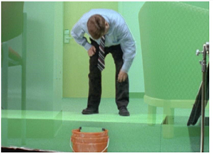

Nuke’s Keyer node provides standard controls for pulling luma keys, green and blue screens, and color channels. We’ll use this keyer - and a few other nodes - to handle a special keying situation: video.
We’ll begin by inserting a group of nodes that allow you to pull a cleaner matte by filtering the compression artifacts in the chroma red and chroma blue channels of digital video. This involves converting the image back to its original colorspace, blurring the channels with the artifacts, and then converting the image back to Nuke’s native linear colorspace.
| 1. | In the “Keying Video” node tree, select the fgman.0001.dpx node. |
When Nuke reads images into the workspace, it converts them to a linear colorspace. So here the first step is to convert the video image back to video YCbCr colorspace.
| 2. | Right-click over the node tree and choose Color > Colorspace. |
| 3. | In the Colorspace1 control panel, change the out parameter to YCbCr. |
No, you’re not having an 80’s flashback. What you’re experiencing is the result of the red, green, and blue channels remapped to the native video channels for luma (Y), chroma blue (Cb) and chroma red (Cr), respectively.
| 4. | Press r over the Viewer to look at the Y channel. Press g to view Cb, and b to view Cr. |
Above, you see the Y channel image on the left. The Cb channel image is shown on the right. Notice the “blocky” compression artifacts in the Cb channel. These make it difficult to get a clean edge for your matte, but since most of your detail is in the Y channel, you can apply a small blur operation to the Cb and Cr channels to improve the situation without losing much detail.
| 5. | Press r, g, or b again to toggle back to all color channels. |
| 6. | Right-click on the Colorspace1 node and choose Filter > Blur. In the Blur1 control panel, set the blur size to 4. |
| 7. | Select rgb in the channels dropdown menu and uncheck the red channel box. You don’t want the blur operation to process the image in the red channel (the remapped Y or luma channel) because this channel is uncompressed. |
| 8. | Right-click on the Blur1 node and add another Color > Colorspace node. Change the in parameter to YCbCr and the out parameter to Linear. This converts the image back to standard rgb/linear. |
| 1. | Select the Colorspace2 node, and choose Keyer > Keyer from the right-click menu. |
This inserts a keyer named “luminance key,” which is the default keying operation for this node.

| 2. | Attach a Viewer to the luminance key node and then press A to display the alpha channel. |
In the control panel for the Keyer node, you’ll see the “range” graph:

The range graph is where you’ll adjust the low and high pixel values of the matte. The first yellow handle on the left determines the low or transparent values of the key and second handle, on the upper-right, determines your high or opaque values.
| 3. | Drag the first yellow handle to the right until it reads .303 (approximately), and watch the effect in the Viewer. |
This sets the low value for the matte. Any pixels that fall below this value are clipped to black.
| 4. | Drag the yellow handle, located at the upper-right edge, to the left until it reads .455 (approximately). |

This sets the high value for the matte. Pixel values above this setting are clipped to white. At these settings, it’s not quite “matte-worthy,” so let’s make an adjustment.
| 5. | Drag the A handle to change the low setting from .303 to .424, and drag the B handle to change the high value from .455 to .61. |

As you adjust the location of the handles, the slope of the line controls the softness, or level of grays, for the matte edge. A gradual slope produces a softer edge. A sharper slope produces a jagged or crunchy edge - drag the A handle on top of the B handle and you’ll see what that means.

The default positions let you control the low and high values, assuming your image has distinct light and dark areas. However, sometimes the subject of the matte falls into the “middle-gray” area; the C and D handles on the curve, after the first two, let you shift the center for the high values of the key.
| 6. | Change the keying operation to greenscreen. Pull the high value handle to the right, up to the value of 1.0. Then, set the low value at .90. |

There’s a lot of garbage around the image, but it looks like you’ve got a fairly clean edge around your subject. Let’s check it in the comp.
| 7. | Switch the Viewer to display all color channels and then attach the Viewer to the Merge (over) node. |

That’s completely terrible. What happened? The alpha channel created by the greenscreen keyer must be multiplied into the pixel values of the original image in order to generate the matte. Some keyers, like Primatte, provide a “composite” output option which handles the multiplication for you. The Keyer node does not, so you'll have to do it manually.
| 8. | Select the greenscreen keyer node and choose Merge > Premult from the right-click menu. |
| 9. | Adjust the high and low ranges values in the greenscreen node’s control panel to refine the edges around your subject. |

This keyer isn’t particularly good at handling spill, so let’s add a color-correction node to remove those green edges.
| 10. | Select the Premult1 node and then choose Color > HueCorrect from the right-click menu. |
| 11. | Select the g_sup parameter in the HueCorrect1 control panel to select the green suppression curve. |
| 12. | Over the Viewer, press the Ctrl or Cmd key and scrub over the green edges. |
Inside the HueCorrect properties panel, you’ll see a yellow vertical line, which marks the place in the curve that you need to lower to suppress the samples pixels.
| 13. | While viewing the edges you want to suppress, adjust the g_sup curve so that it looks similar to this: |
When you’re satisfied with the spill-suppression, you may want to add a quick garbage matte to remove the rigging.
| 14. | Click on an empty place in the node tree, and add a Draw > RotoPaint node. |
| 15. | Select the Bezier tool in the RotoPaint toolbar on the left side of the Viewer and click (and drag if you want curved points) over the Viewer to draw a Bezier shape around the man. Four points should be enough. |
| 16. | Select the RotoPaint node and press M to add a Merge node - that’s the shortcut for choosing Merge > Merge from the menu - and change the merge operation to mask. |

| 17. | Rewire the nodes as shown below. The RotoPaint1 node should be connected to the A input on the “mask” node, HueCorrect1 should be connected to the B input. Connect the output of mask to the “elbow” dot. |

This method of masking is a little different than what you did in the previous example. The point here is that there are different ways to structure these types of composites. Your results should look similar to the screen capture below.

|
|